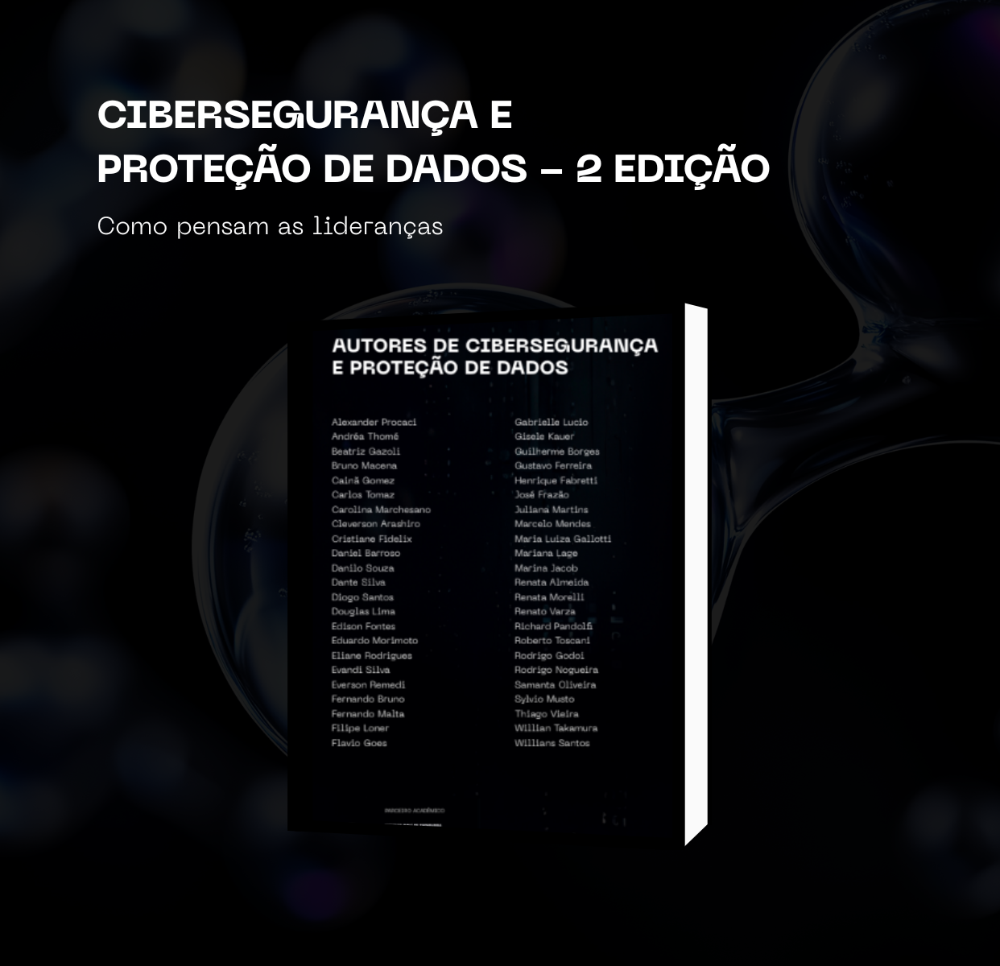

ESTAMOS COMPROMETIDOS EM ACHAR AS MELHORES SOLUÇÕES
UMA FUSÃO DAS MELHORES FERRAMENTAS DE ACCOUNT-BASED MARKETING
E
CONHECIMENTO PARA PESSOAS E EMPRESAS
Comunidade
Grupo exclusivo para tomadores de decisão das mais diversas empresas e áreas, comprometidos em encontrar, discutir e divulgar as melhores soluções de tecnologia e inovação
Squads
Toda semana, presencialmente, reunimos as lideranças de mercado para uma conversa franca e honesta que só a Rede Líderes proporciona. Um ambiente seguro e com credibilidade, onde somente quem participa saberá do que tratamos. O que se fala aqui vira decisão nas empresas
Editora
Publicamos livros com a sua marca e identidade, um documento que ficará para a eternidade. Realizamos o lançamento em um evento exclusivo para nossa comunidade de coautores e líderes, garantindo atenção, confiança e credibilidade ao seu conteúdo e solução
Conselho
Consultoria e orientação: reunimos as melhores lideranças para te guiar e ajudar a sua empresa ou carreira. Receba conhecimento daqueles que já tiveram resultados positivos no mercado
H2H Match
Fale online com seu lead: nossa plataforma de tecnologia a serviço da inteligência relacional para gerar oportunidades para pessoas e empresas. Marque uma reunião online com nossos líderes
O QUE SOMENTE A REDE
LÍDERES TEM
ECOSSISTEMA DE SOLUÇÕES TECH
PARA TODAS AS ÁREAS
Reunimos CEOs, CTOs e líderes de outras áreas como Produto, Cibersegurança, Proteção de Dados, Antifraude, Finanças, Jurídico, Recursos Humanos, Jurídico e CX para conversar, reservadamente, sobre novas soluções de tecnologia e as metas de cada líder. Essa inclusão de áreas facilita o processo de entendimento e acelera o ciclo de tomada de decisão entre empresas, pessoas e soluções. A demanda por tecnologia e inovação é da empresa como um todo. Não está restrita a apenas uma área. Dessa forma, geramos valor para os nossos dois públicos que compõem o ecossistema: 1) os decisores empresariais comprometidos em agregar tecnologia e novos modelos de liderança e tecnologia em suas áreas e 2) as soluções de tecnologia que possuem serviços alinhados ao nosso propósito.
SQUADS
No Squad, não existe palco, não existe plateia: existe confiança, troca verdadeira e o compromisso em achar as melhores soluções de tecnologia.
Todos estão lado a lado, líderes de diferentes empresas, compartilhando experiências, dores e caminhos.
É um ambiente reservado e seguro, onde as conversas não ficam no discurso, mas se transformam em decisões reais dentro das empresas.
Diferente de um painel ou palestra, aqui ninguém assiste de fora.
E só quem esteve lá sabe as soluções que foram apresentadas.
O que são os squads?
Esqueça os eventos tradicionais, onde os palestrantes não revelam seus problemas e, geralmente, falam de maneira genérica. Os Squads são reuniões entre decisores das empresas em nosso escrtiório, sem palco e sem holofotes, para garantir uma conversa franca, segura e honesta sobre os desafios de cada um, como podemos resolvê-los e encontrar as melhores soluções de tecnologia. Menos palco e mais resultado. Garantindo, assim, conexões reais com seu lead, além de insights e conversões em oportunidades. Acontecem toda quinta e sexta, em nosso escritório da Vila Olímpia, para no máximo 10 decisores empresariais.


5 Pilares dos Squads
Aqui estão os cinco pilares que sustentam nossa filosofia e prática.
1
Formato de diálogo
em vez de um palestrante principal e ouvintes passivos, todos são convidados a participar da conversa
2
Troca de experiências
o objetivo central é compartilhar visões, desafios e soluções
3
Foco temático
cada Squad gira em torno de um tema específico, como tecnologia, produto, CX, finanças, jurídico, recursos humanos, cibersegurança, proteção de dados, antifraude entre outros, finanças, permitindo que as falas sejam práticas e direcionadas
4
Ambiente restrito
são encontros mais intimistas, com número limitado de participantes para garantir profundidade nas discussões
5
Conexões reais
todos os participantes trocam contatos e podem continuar com as conversas, entregas e resultados
Soluções para Líderes
Soluções para Empresas
SQUADS
O Squad é onde líderes de diferentes mercados trocam ideias, pensamentos e atualizações,
sempre em um ambiente: sem câmeras, sem áudios,
apenas conversas reais e networking que fazem a diferença.
O Poder da Sua História em Livros que Conectam
Em um mundo de informações efêmeras, o livro se mantém como uma linguagem universal e perpétua. Nós transformamos o seu conhecimento em autoridade, publicando obras coletivas e individuais que posicionam pessoas e empresas para que elas atinjam seus objetivos.
Participar de um de nossos livros é mais do que apenas publicar. É a oportunidade de colocar sua marca e identidade para a eternidade, utilizando a sua própria experiência e soluções. Priorizamos a qualidade do conteúdo em vez de um "pitch de vendas".
O resultado? Mais conteúdo, mais autoridade e a melhor conversão de marca e leads. Deixe sua marca no mundo não com um anúncio passageiro, mas com a solidez de um livro.
Livros Rede Lideres


Artigos de nossos lideres
A questão não é se a IA pública é útil ela é. A questão é como as empresas estão usando essa tecnologia.
Roberto Toscani
Líder de Cibersegurança
A experiência do consumidor costuma ser resumida à relação que se estabelece entre cliente e produto ou serviço, ou à forma pela qual o cliente adquire e consome o produto ou serviço.
Priscila Sabbag
Líder de CX
Empresas que investirem em tecnologias emergentes e se adaptarem às novas demandas do mercado estarão melhores posicionadas.
Loise Nascimento
Líder de Finanças
A Cibersegurança deixou de ser apenas uma questão técnica e passou a ser uma prioridade estratégica, ética e social.
Thiago Cunha
Líder de Cibersegurança
implementação da norma objeto de estudo é imprescindível para assegurar a privacidade das informações dos usuários e promover um ambiente digital mais transparente e seguro.
Carolina Marchesano
Líder de Legal
Os bancos digitais estão no centro de uma revolução financeira que transforma profundamente a relação das pessoas e empresas com os serviços bancários.
Willian Takamura
Líder de Legal
A colaboração e o compartilhamento de informações entre setores e empresas também são vitais.
Juarez Borges Filho
CEO

Ferramentas baseadas em IA conseguem, em minutos, fazer o que um advogado júnior levaria horas para realizar.
Maysa Scrocco
Líder de Legal
A experiência do colaborador é um dos pilares fundamentais para o sucesso de qualquer organização.
Bárbara Vidal
Líder de RH
Soluções para Líderes
Soluções para Empresas
CONSELHO
O Squad é onde líderes de diferentes mercados trocam ideias, pensamentos e atualizações,
sempre em um ambiente: sem câmeras, sem áudios,
apenas conversas reais e networking que fazem a diferença.
Liderança em
CONSELHO
INOVAÇÃO
AS MELHORES LIDERANÇAS DO MERCADO PARA TE ORIENTAR E ACONSELHAR
Reunimos lideranças de mercado para construir frameworks e protocolos para certificar e orientar mercado ou sua empresa em tecnologia e inovação.
O Conselho reflete a prática e interesses atuais do mercado. Não somos observadores, somos praticantes da inovação.
Treinamentos especializados
Ações práticas
Frameworks exclusivos
Certificações
Combo Integrado Único
A jornada incluirá treinamentos e ações práticas, além de abordar o que realmente o mercado precisa. Nenhuma consultoria entregará esse combo integrado.
Conte com quem está neste momento à frente da tecnologia e inovação.
Soluções para Líderes
Soluções para Empresas
© 2025 - Todos os direitos reservados.